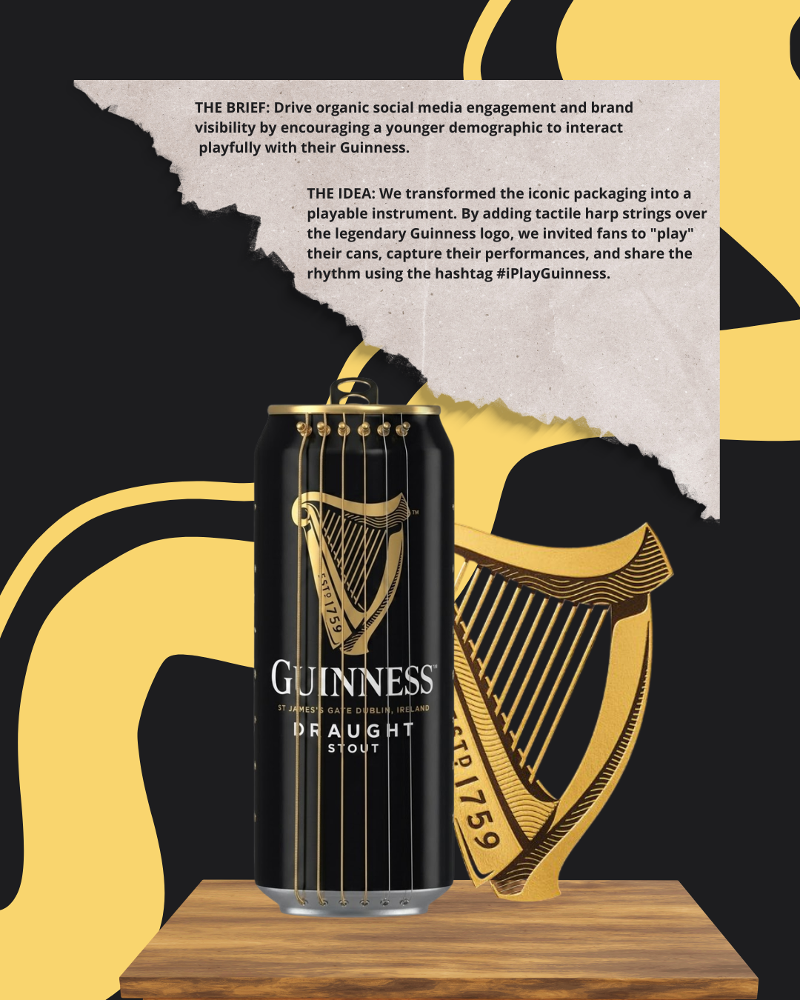
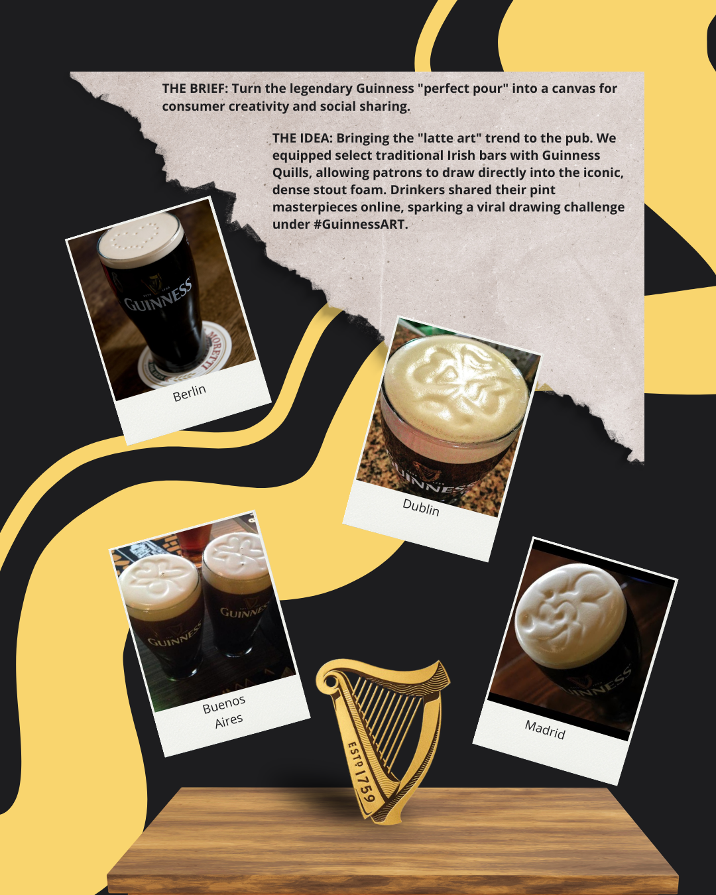

Guinness: Interactive Social Campaigns
Role: Art Direction & Concept Creation
The Challenge
Encourage consumers to engage with Guinness in a playful way, transforming a traditional beverage into a catalyst for viral, user-generated content (UGC) on social media.
Concept 01: #iPlayGuinness
We reimagined the iconic packaging by integrating tactile strings over the classic Guinness harp logo. This turned the can into a miniature instrument, prompting consumers to record themselves "playing" the harp and sharing their performances online.
Concept 02: #GuinnessART
Taking inspiration from latte art, we introduced special tools in selected traditional pubs. Patrons could draw directly into the famous dense stout foam, creating personalized art and sparking viral drawing challenges.

